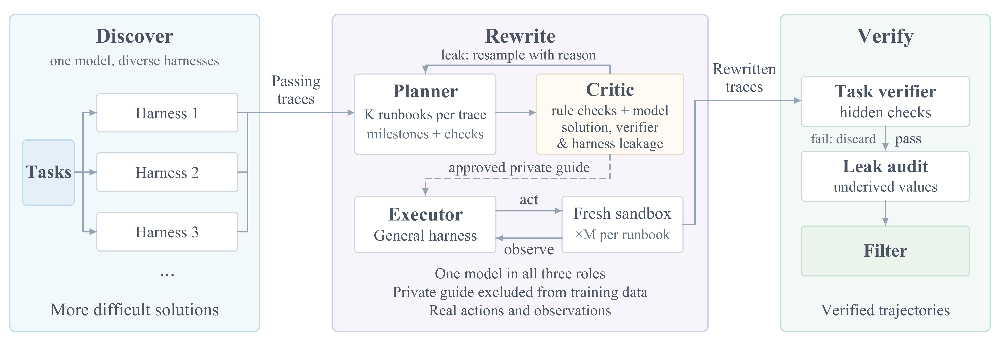
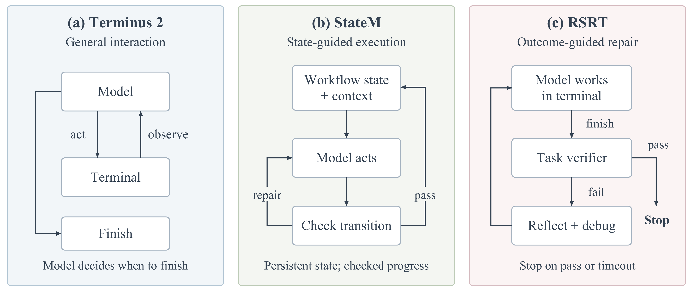

核心判断：RSR 先用 Terminus 2、StateM、RSRT 等 discovery harness 找到可行流程，再由 critic 拒绝不合格候选、planner 重写 runbook，并在目标 sandbox 中真实重执行。通过验证的轨迹才进入最终 SFT，部署时不依赖发现阶段的外部 harness。
问题与动机
强 harness 让模型完成任务，但直接模仿其轨迹可能复制工具、状态和外部消息依赖，部署到普通框架后失效。
方法框架
- 多 harness 提供互补成功轨迹；critic 先做规则检查，再进行模型审查。
- executor 在全新 sandbox 重放，检查成功、泄漏和目标接口可执行性。
- ‘Recursive’指候选重写循环，并不等于论文展示了多代模型自我训练。
实验与核心结论
- 相对 Base，RSR 的 pass@3 在 Terminal-Bench 2、TBH 分别从 57.0%/39.0% 提升到 74.2%/63.0%。
- 相对 Direct SFT，TB2/TB3/TB4/TBH/SWR100 的 pass@3 提升 20.8/4.1/4.6/7.0/3.0 个百分点。
- 在 TB3/TB4/SWR100 上绝对成功率仍只有 9.5/9.1/6.0%，LHTB 三组都未完成完整任务。
轨迹重写流程

三种 discovery harness

价值与边界
RSR 证明‘程序提炼 + 目标接口重执行’比直接模仿长轨迹更稳，但 runbook 泄漏边界、完整训练配置和跨来源去重仍需补证。